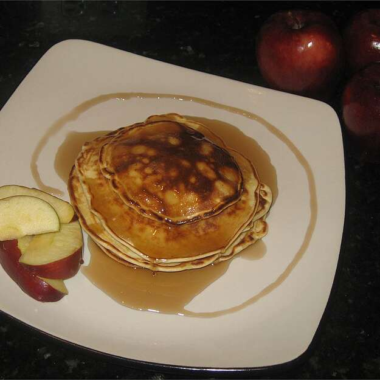

Pancake recipe

Pancake
Pancakes are very delicious meal suitable for breakfast and brunch.
They are easy and quick to make
Ingredients
- 2 large eggs
- 2 teaspoons white sugar
- 1 pinch salt
- 2 cups all-purpose flour
- 2 teaspoons baking powder
- 2 cups milk
Steps
-
Beat eggs until fluffy; beat in sugar and salt. In a separate bowl, stir
flour and baking powder together. Stir milk and flour mixture
alternately into eggs, starting and ending with milk.
-
Heat a lightly oiled griddle or frying pan over medium high heat. Pour
or scoopp the batter onto the griddle, using approximately 1/4 cup for
each pancake. Do not turn pancake until tiny holes appear all over the
uncooked side(top) of the pancake in the pan. Cook until brown on both
sides and serve hot.
back